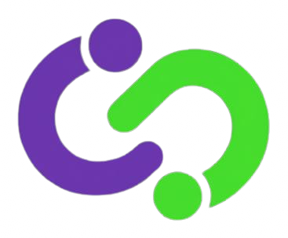

<!-- PIE DE PÁGINA / FOOTER -->
  <footer class="site-footer">
    <div class="footer-main">
      
      <!-- Sección "Acerca de" -->
      <div class="footer-about">
        <a class="brand footer-brand" href="../index.html">
           
          <span>Loop</span>
        </a>
        <p>La plataforma de networking premium diseñada<br>por y para desarrolladores e ingenieros de<br>software. Conexión directa y análisis avanzados<br>sin ruido intrusivo.</p>
      </div>
      
      <!-- Columna: Plataforma -->
      <div class="footer-column">
        <h2>Plataforma</h2>
        <a href="#explorar">Explorar Red</a>
        <a href="#premium">Loop Premium</a>
        <a href="#empleos">Empleos Tech</a>
      </div>
      
      <!-- Columna: Compañía -->
      <div class="footer-column">
        <h2>Compañía</h2>
        <a href="./acercade.html">Acerca de Nosotros</a>
        <a href="#seguridad">Seguridad</a>
        <a href="#contacto">Contacto</a>
      </div>
      
      <!-- Columna: Recursos -->
      <div class="footer-column">
        <h2>Recursos</h2>
        <a href="#blog">Blog Técnico</a>
        <a href="#ayuda">Centro de Ayuda</a>
        <a href="#api">API Developer</a>
      </div>
    </div>
    
    <!-- Barra inferior con copyright y enlaces legales -->
    <div class="footer-bottom">
      <span>© 2026 Loop Technology Inc. Todos los derechos reservados.</span>
      <div>
        <a href="#privacidad">Privacidad</a>
        <a href="#terminos">Términos de servicio</a>
        <a href="#cookies">Cookies</a>
      </div>
    </div>
  </footer>